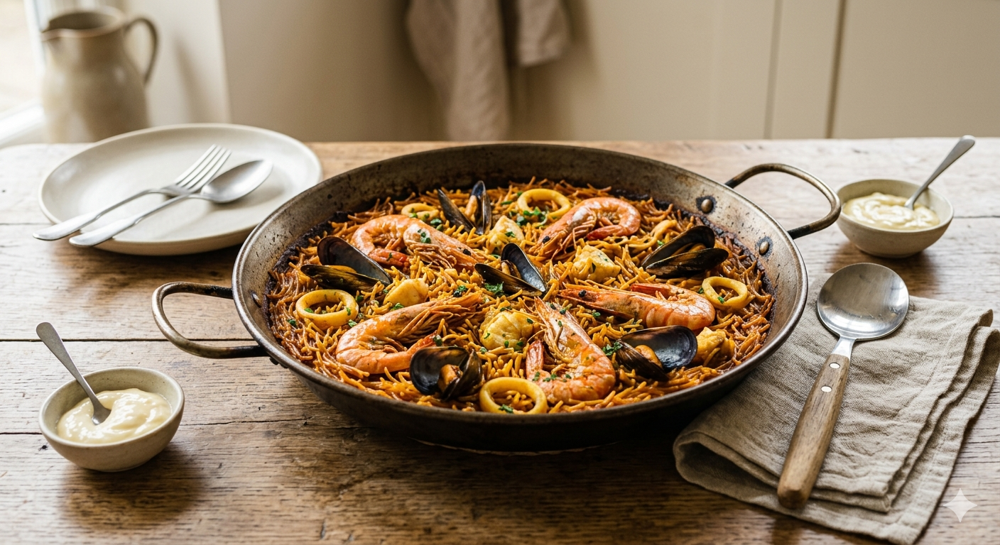

Fideuà

Description
Everyone knows the Paella, one of the most famous dishes of Spain. However, I would dare to say not the best. Fideuà is not as known but much better. It is the same concept but with thin little pasta called fideu (the name comes from here), in the same type of pan ("paella" in catalan).
The Fideuà reminds me much more of my home. My father would usually cook it some weekends and with some allioli sauce it makes a perfect saturday lunch. This is my favorite recipe made for 2 people.
Ingredients
- 6 full red shrimps
- 1 cutterfish
- 1/2 onion
- 2 garlic cloves
- 3 tomatoes
- Paprika
- 1/2 glass of white whine
- Fish broth
- olive oil
Steps
- We start by toasting the "fideu" pasta. Put some oil on the pan and heat it up, then add the fideu pasta and stir until the pasta looks golden or half toasted. Put the golden pasta aside.
- Clean the cutterfish removing the insides and cut it in cubes. Cook the cutterfish pieces on the pan for 1 minute at high heat and set aside.
- Cook the shrimps with some olive oil at high heat for 5 min and set aside.
- Finely chop the onion and the garlic and cook it in the pan with some olive oil at low heat. Once its reduced and cooked, add 1 spoon of paprika and the tomatoes previously shredded or processed.
- Add the cooked cutterfish and the golden pasta. Add also the fish broth and cook it all for 5 min at high heat and 5-10 min more at low heat.
- Once there is no more broth, turn off the stove, add the cooked shrimps on top and put the paella in the oven for 5 min at 180C for 5 minutes more or until the fideus point up and have crispy brown edges.